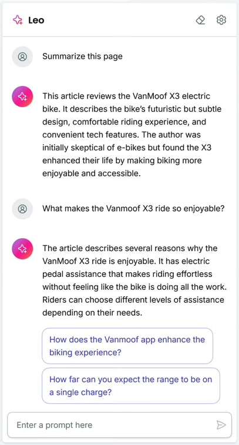
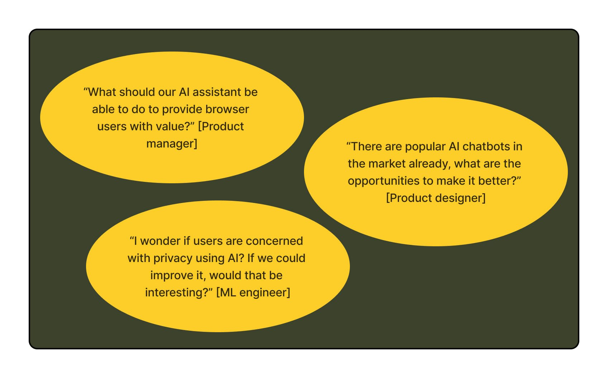
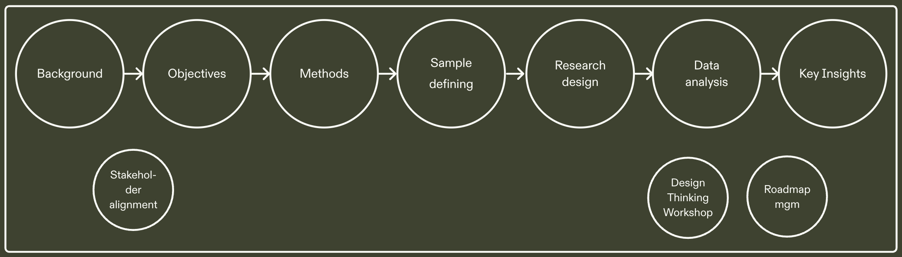
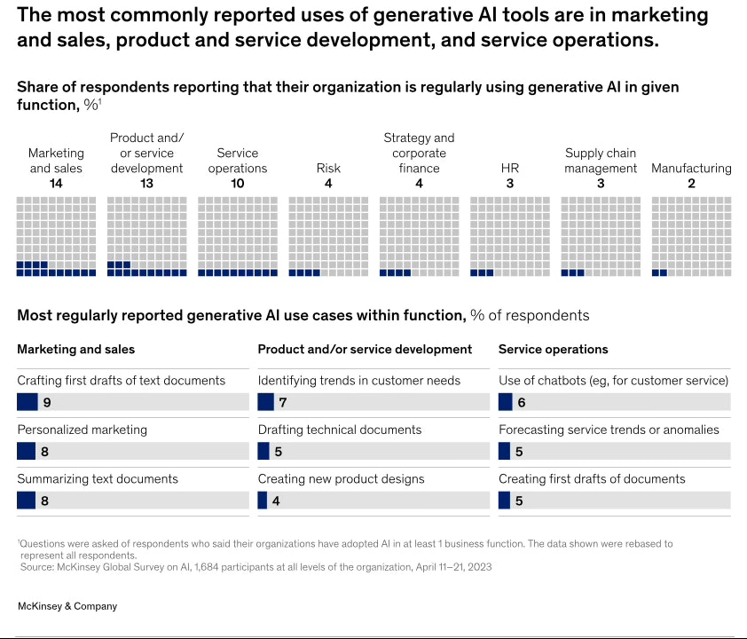
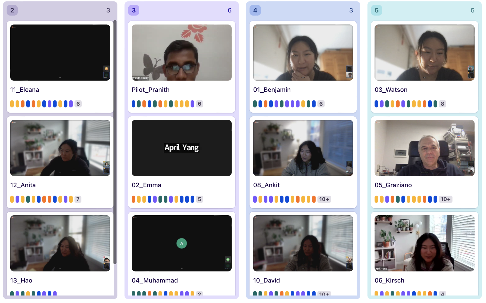
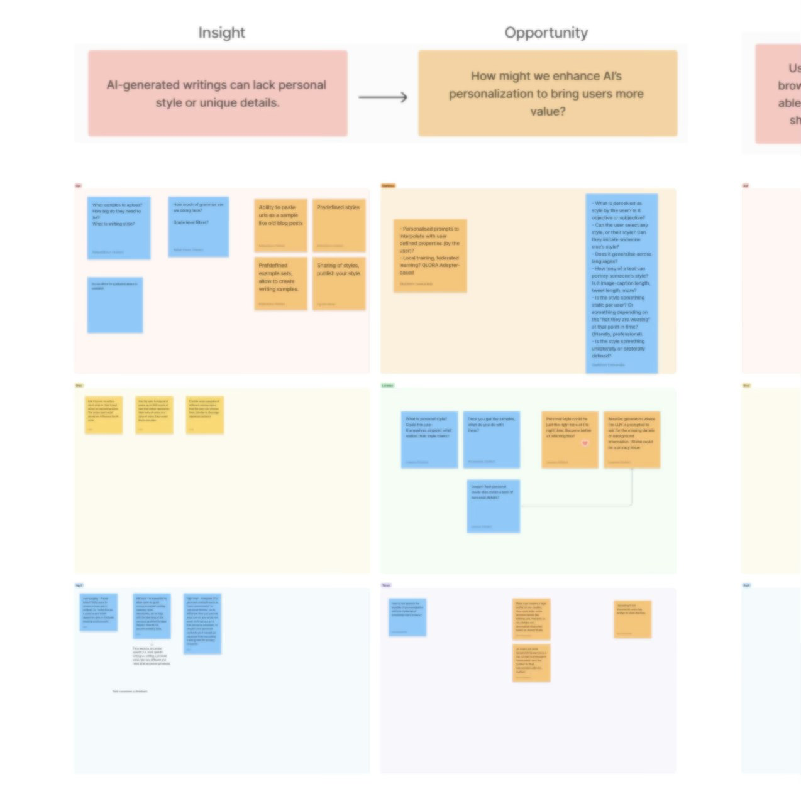
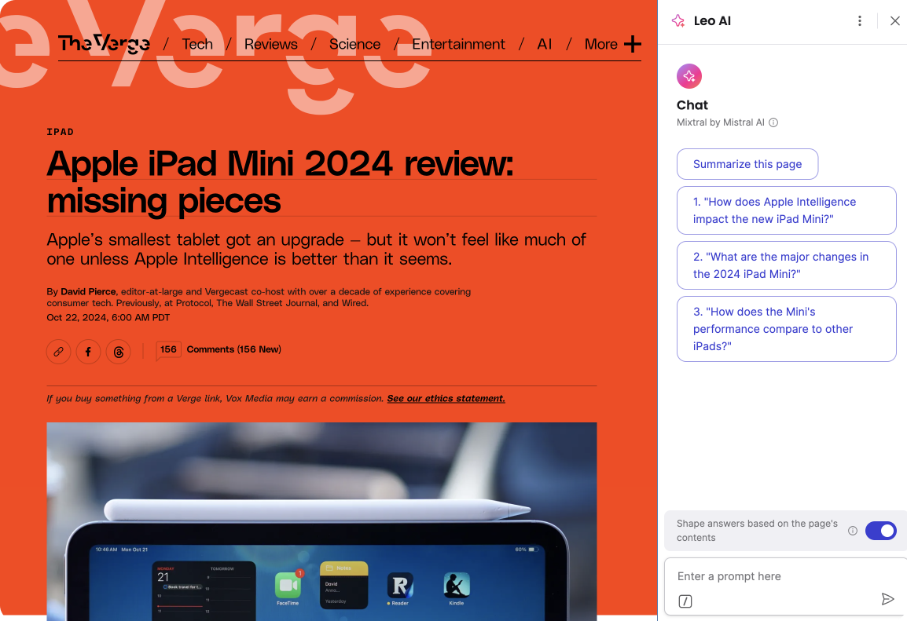
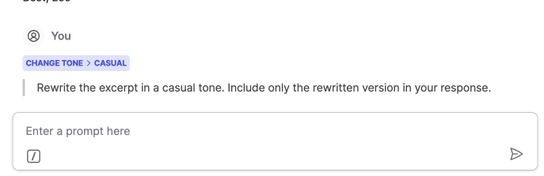
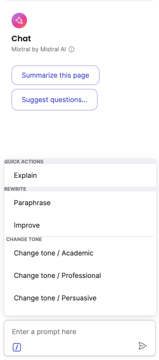
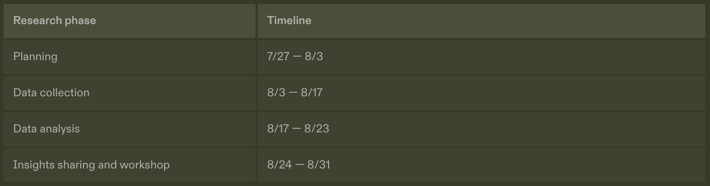

Generative AI · Exploratory · 0→1
Shaping Brave Leo AI's product strategy through early-stage user research
When Brave's leadership decided to ship an AI assistant in under four months, the team had strong opinions but limited user evidence. I designed and ran a mixed-methods research program that gave the product and engineering teams the clarity to make confident decisions — fast.
The challenge
In 2023, Brave's leadership made a strategic bet on generative AI — committing to ship an in-browser AI assistant in under four months. The deadline was fixed. What wasn't clear was who the product was for, what they actually needed from it, or how an in-browser AI could be meaningfully different from standalone tools like ChatGPT. Without that foundation, the team risked building under pressure in the wrong direction.

Research approach
Before running a single study, I met with stakeholders across product, design, ML engineering, and marketing to surface assumptions, align on the decisions that needed to be made, and scope research to what was actually actionable in the MVP window. A secondary study and competitor analysis filled context gaps. From there I built a two-phase research roadmap tied directly to the product timeline.

Stakeholder alignment: surfacing assumptions across product, design, ML engineering, and marketing before scoping research.

Two-phase research process designed to fit inside the MVP timeline.
Survey — segmenting users to focus the product
The first challenge was knowing who Leo was actually for. I designed a survey (n=600) across LinkedIn and existing Brave users to identify which segments were already using generative AI, what tasks they relied on it for, and what they'd value in an in-browser assistant — giving the team evidence to prioritize features for the most relevant users, not the broadest possible audience.
7-point Likert scale for feature importance; Friedman Test to confirm statistical significance of differences across features; descriptive statistics and cross-tabulation for behavioral segmentation. Findings seeded Phase 2 recruiting criteria.

Survey findings segmented users by behavior and task type, directly informing Phase 2 recruiting.
Interviews & observation — behavior over self-report
Survey data told us what users said they valued. Interviews and live observation told us what they actually did — which often diverged. I recruited across two segments surfaced in Phase 1: general chatbot users and writing-focused users. Participants walked through real AI workflows live, revealing prompt habits, tool-switching patterns, trust signals, and how they handled AI errors — including attitudes toward privacy that were central to Brave's product positioning.
Semi-structured interviews with embedded observation. Thematic analysis via affinity mapping. Data coded in Dovetail and synthesized into insights mapped to specific product decisions — not a general findings document.

Affinity mapping and thematic coding in Dovetail — organized by research question and product decision, not topic.
What we learned — and what changed
Findings were presented in a dedicated stakeholder review session structured for discussion, not just delivery — giving the team space to debate implications before decisions were made.
Users consistently switched between AI and search to validate outputs. An AI assistant isolated from search created trust friction. Leo needed embedded pathways to search results — not a walled garden.
Users couldn't find, recall, or build on previous AI interactions. Organization features — folder structures, labels, history — were consistently surfaced as high-value gaps competitors hadn't solved well.
Prompting was a skill barrier. Users who didn't know how to frame requests got worse outputs and lower satisfaction. Structured starting points — canned prompts, preset elements — would reduce the learning curve.
Advanced users wanted the AI to adapt to them — their writing style, preferences, and context. Short-term: user-controlled tone and length settings. Long-term: a model that learns individual style over time.
From insights to roadmap
After the insight review I hosted separate brainstorming workshops with design and engineering — structured to separate what could ship in the MVP window from what needed longer investment to do well. For example: the personalization gap was real, but training a model on individual writing style wasn't an MVP bet. The short-term solution — user-controlled tone, length, and action presets — shipped. The long-term vision went on the post-MVP roadmap with a clear rationale the team had helped build.

Workshops with design and engineering: translating research into a prioritized roadmap, distinguishing MVP scope from long-term bets.
What shipped
Four specific features in Leo's MVP trace directly to research findings.

Suggested Questions — addresses insight #3: reduces the prompting skill barrier by introducing users to Leo's capabilities with structured starting points.

Tone and length presets — the short-term solution for insight #4. Gives users meaningful control over output style without requiring a long-term model personalization investment.

Two primary use cases — research confirmed the MVP should focus on summarizing web content and AI-assisted writing, rather than trying to cover every possible task. Scope clarity reduced engineering risk.
Post-launch
After Leo landed in Nightly, I ran a targeted usability test on core tasks — findings drove quick-turn legibility and usability improvements before public release. I also partnered with the PM to build a private analytics framework, defining the metrics that would track Leo's performance and feed the next research cycle.
Looking back
The main trade-off was depth for speed. Given more time, I'd have explored occupational segmentation more rigorously — secondary data suggested AI value varies significantly across professions, and that lens could have sharpened the product strategy further. The constraint was real, and the approach was right for the moment.
What I'd carry forward: instrument analytics before ship, not after — so the post-launch feedback loop starts on day one rather than being retrofitted.

Project timeline — 6–7 weeks from stakeholder alignment to post-ship analytics setup.